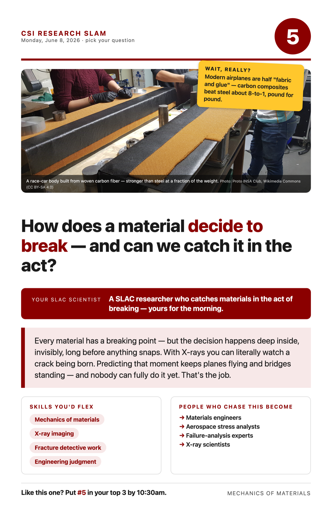

Your project · scroll down for the reading, video & math
Half of a modern airliner — including most of the body of a Boeing 787 — is made of what engineers half-jokingly call "fabric and glue": carbon-fiber composite, woven sheets of carbon thread soaked in hardened resin. It sounds flimsy. It isn't. Pound for pound, carbon composite beats steel roughly 8 to 1 on strength — which is why switching from aluminum saves an airliner about 20% of its weight and tens of thousands of rivets.
But composites come with a deal: they're stronger, and harder to predict. A metal usually fails politely — it bends and stretches and warns you. A composite is a layered team of materials, and it can fail dozens of ways: a fiber snaps here, layers peel apart there (engineers call it delamination), tiny cracks wander through the resin — all hidden inside, until enough small failures gang up and the part lets go.
So the real research question isn't "how strong is it?" — it's "how does it decide to break?" What's the chain of tiny events between "fine" and "failed"? If you could watch that chain happen, you could design materials that interrupt it — and predict honestly when a part needs replacing.
That's what your scientist does: studies how composite materials fail, and how to catch failure in the act. At a place like SLAC you can load a material until it starts to crack while X-raying it — watching damage being born deep inside, frame by frame, like a medical scan of a material having the worst day of its life. Every flight you'll ever take is safer because someone does this.
Wait, really? (steal these for your Wow Hunt)
- Modern airliners are ~50% "fabric and glue" by weight.
- Carbon composite beats steel ~8-to-1, pound for pound.
- Composites can fail invisibly, deep inside, while the surface looks perfect.
- X-rays can film a crack being born, frame by frame.
Words you'll hear
Composite — a material made of two materials working as a team (fibers + resin). Delamination — layers of a composite peeling apart inside. In-situ imaging — X-raying a material WHILE it's being loaded or broken.